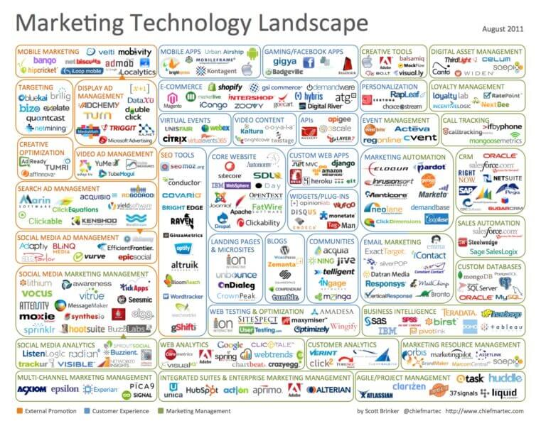
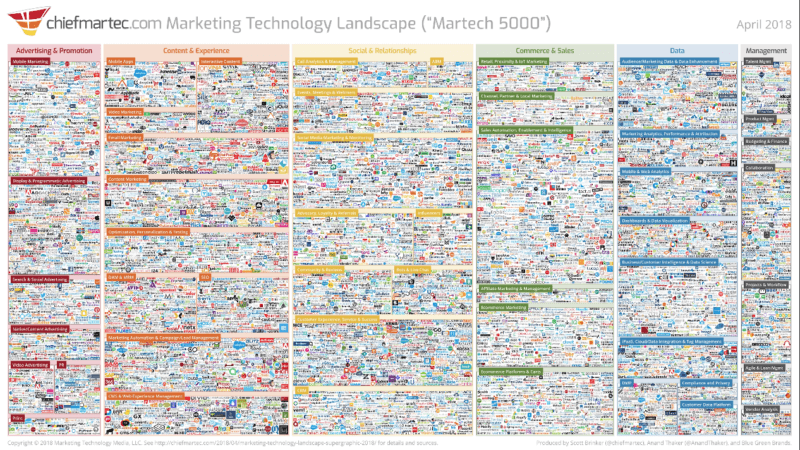

Người đóng góp Ryan Phelan chia sẻ quy trình từng bước để xác định các nhà cung cấp công nghệ phù hợp nhất với nhu cầu của công ty bạn.
Đây là bối cảnh Công nghệ Tiếp thị đầu tiên vào năm 2011. Hồi đó, email bị hạn chế về những gì nó có thể làm. Vì vậy, các đối tác công nghệ rất ít và xa nhau.

10 năm sau, mọi thứ đã thay đổi chóng mặt với nhiều danh mục hơn, lên đến 5000 nhà cung cấp!

1. Bám vào những gì bạn cần, không phải những gì hay ho.
Trước khi bạn gọi cho một nhà cung cấp, hãy xem xét kỹ bối cảnh martech hoặc kiểm tra các báo cáo Gartner hoặc Forrester mới nhất để hiểu bạn cần gì và kết quả mong muốn của bạn là gì.
Đó có thể là tích hợp trên toàn bộ tổ chức hoặc tích hợp email với hệ thống CRM hoặc POS của bạn hoặc đáp ứng kỳ vọng của cấp điều hành.
Bạn không cần phải vội vàng xuất bản một RFP ngay lập tức hoặc thậm chí viết mọi thứ ra giấy theo phong cách đó, suy nghĩ theo cách tập trung vào nhu cầu và kết quả này sẽ giúp bạn tránh bị phân tâm bởi các tính năng "không hay ho".
2. Yêu cầu các bên liên quan mua trước.
Khi bạn đã phát triển danh sách các nhu cầu của mình, hãy kiểm tra nó trong toàn bộ tổ chức của bạn. Tốt nhất bạn nên thực hiện việc này khi bắt đầu tìm kiếm, khi mọi thứ bùng nổ và ai đó đưa ra yêu cầu mà bạn không ngờ tới.
Việc mọi người tham gia sớm trong quá trình cung cấp cho bạn thông tin bạn cần và tập trung sự chú ý của tổ chức vào những gì bạn đang cố gắng đạt được.
3. Tham khảo các bên liên quan
Toàn cảnh Công nghệ Tiếp thị năm 2020 cho thấy bạn có thể có 100 công ty khác nhau để lựa chọn cho mọi thứ bạn muốn làm. Không có cách nào giúp bạn có thể truy cập một tài nguyên như vậy và có được bất kỳ kiến thức nào về việc ai sẽ là nhà cung cấp phù hợp cho những gì bạn cần. Có đủ nguồn lực và kiến thức trong ngành để giúp bạn đưa ra quyết định đúng đắn.
Nơi đầu tiên để bắt đầu là ESP của bạn. Đây nên là cuộc gọi đầu tiên của bạn vì có thể họ đã nói chuyện với nhiều công ty trong phần thị trường công nghệ cao mà bạn đang nghiên cứu. Họ nên biết ai là người hợp pháp, người mà họ hoặc những khách hàng khác sử dụng hiện tại và những công ty nào sẽ tích hợp với nền tảng của bạn.
Ngoài ra, hãy kiểm tra với những người trong ngành, những người biết rõ bối cảnh hoặc đã làm việc với các nhà cung cấp mà bạn quan tâm. Sử dụng các diễn đàn dành cho nhà tiếp thị hoặc các nhóm tư vấn. Một khi bạn thu thập được thông tin tình báo của mình, hãy viết báo cáo. Bằng cách đó, khi các bên liên quan hỏi tại sao bạn chọn một nhà cung cấp nhất định, bạn có thể cho họ biết bạn nhận được những đề xuất nào, ai đã đưa chúng cho bạn và bạn đã sử dụng những nguồn lực nào để đưa ra quyết định.
4. Đánh giá các đề xuất của bạn.
Rất nhiều người hào hứng với những khả năng mà một nhà cung cấp mới có thể mang lại cho họ. Hãy chắc chắn rằng bạn bám sát những gì bạn cần và ghi nhớ phản hồi bạn nhận được từ các bên liên quan và cố vấn trong ngành của bạn. Đối mặt với bất kỳ thách thức tiềm năng nào mà bạn tìm thấy trong các đánh giá của mình.
5. Để mắt đến chi phí.
Đảm bảo rằng mô hình tài chính bạn đang lập kế hoạch với công nghệ mới không làm cho email trở nên vô lợi.
Điều này có nghĩa là không phải lúc nào bạn cũng sẽ khởi chạy một chiến dịch bằng công nghệ nâng cao mới cho tất cả những người trong danh sách gửi thư của bạn.
Ví dụ, video trong email có thể là một tính năng thú vị. Nó thậm chí có thể là tính năng mà bạn đã xác định là “cần phải có”. Tuy nhiên, nó không hoạt động với tất cả mọi người trên tất cả các ứng dụng email. Bạn sẽ không gửi tin nhắn video trong email đến các miền không phát công nghệ đó. Nếu bạn làm vậy, bạn sẽ lãng phí tiền bạc và số lần hiển thị.
Bạn luôn muốn xem xét đối tượng tốt nhất cho công nghệ bạn muốn sử dụng và giá cả sẽ là bao nhiêu. Đừng cho rằng chi phí sẽ dựa trên việc thực hiện đầy đủ toàn bộ danh sách của bạn trừ khi đó là điều bạn cần làm để đạt được kết quả mà bạn đã xác định trước đó.
Cùng với việc đánh giá chi phí, hãy đảm bảo bạn kết hợp một kịch bản thử nghiệm để đo lường thành công của mình. Như tôi đã đề cập trước đây, bạn cần biết kết quả bạn muốn và KPI mà bạn sẽ sử dụng để đo lường nó.
Tất cả thông tin này có thể tẻ nhạt để thu thập, nhưng nó sẽ giúp bạn điều hướng bối cảnh phức tạp và khó hiểu của công nghệ tiếp thị. Các biểu đồ ở trên sẽ không giúp bạn chọn được nhà cung cấp, nhưng chúng thể hiện mật độ của không gian này và khiến mọi người hào hứng với số lượng công nghệ và đổi mới bổ sung cho nỗ lực của chúng tôi.
Khi xem xét từ năm 2011 đến năm 2020, những gì chúng ta thấy là vòng cung đổi mới dài và cao và đang thúc đẩy chúng ta về phía trước nhanh chóng. Với các lộ trình phù hợp, được tạo thành từ nghiên cứu cẩn thận và các đề xuất, chúng ta sẽ biết mình đang đi đúng hướng.
Nguồn: martechtoday.com